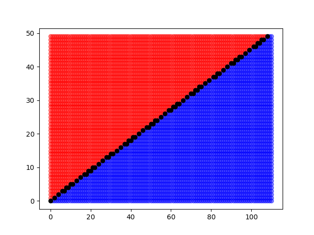

The legendre symbol \(\left( \frac{a}{p} \right) \) is just \(\pm 1\) : \(+1\) if \(a\) is a quadratic residue \(\mod p\) and \(-1\) if \(a\) is a quadratic non-residue.
Proposition. \[\left( \frac{a}{p} \right) \equiv a^{\frac{p-1}{2}} \bmod p\]
Proof. If \(a\) is a quadratic residue then \(a^{\frac{p-1}{2}}\equiv 1 \mod p\) by FLT. In fact this is iff.
Proposition. There are \(\frac{p-1}{2}\) quadratic residues \(\mod p\). They are the roots of the poly \(X^{\frac{p-1}{2}}-1\) and the non-residues are roots of \(X^{\frac{p-1}{2}}+1\).
Proof. by FLT \(X^{p-1}-1\) has \(p-1\) roots. Factor the poly. factors num roots is same as its degree. Observe that \(i^{2}\) for \(i\le \frac{p-1}{2}\) is a set of distinct numbers which are all quad residues.
Ok the reason they are distinct is because if \(i^{2}-j^{2} \equiv 0\) then basically we need \(i+j =p\) but that wont happen by virtue of \(i\neq j\) and the range we chose them in.
Proposition. Legendre symbol plays nicely with multiplication
really understanding it
To really understand it we need some lattice geometry stuff.
Let \(\eta_n(a)\) denote the unique \(a'\equiv a \mod n\) such that \(a'\in (-\frac{n}{2}, \frac{n}{2}]\).Lemma. Let \(k\) count the number of \(j\in [\frac{p-1}{2}]\) such that \(\eta_n(ja) <0\). Then \[\left( \frac{a}{p} \right) = (-1)^{k}.\]
Proof. Hmm. I dont quite get this yet But here’s a proof anyways Observe that \(\{|\eta_n(aj)| \mid j\in [\frac{p-1}{2}]\}\) contains each element of \([\frac{p-1}{2}]\). This is because \[|aj|\equiv |ai| \implies i\pm j \equiv 0\] which is impossible for distinct \(i,j\in [\frac{p-1}{2}]\).
But then \[(-1)^{\ell}\equiv a^{\frac{p-1}{2}} = \left( \frac{a}{p} \right) .\]
Theorem. \[\left( \frac{p}{q} \right) \left( \frac{q}{p} \right) = (-1)^{\frac{p-1}{2}\frac{q-1}{2}}.\]
Proof. Using our condition above this actually becomes a geometric problem. Basically there is a rectangle \([\frac{q-1}{2}]\times[\frac{p-1}{2}]\) and we are concerned with certain lattice points in it. Let \(k_p,k_q\) be the number from the lemma above. In the end we end up wanting to show that \[\frac{p-1}{2}\frac{q-1}{2} - (k_p+k_q)\] is even. This counts lattice points in the rectangle which are not of some certain form. We break it into two regions and show a bijection between them to conclude. Here’s a visualization: 
import matplotlib.pyplot as plt
p = 101
q = 223
def typeRed(x,y):
return q*y-p*x >= q/2
def typeBlue(x,y):
return q*y-p*x <= -p/2
def typeBlack(x,y):
return not typeRed(x,y) and not typeBlue(x,y)
def unpack(array):
flat = []
for L in array:
flat += L
xs = [pair[0] for pair in flat]
ys = [pair[1] for pair in flat]
return xs, ys
def typeXs(typeFn):
type_matrix = [[(x,y) for x in range(q//2) if typeFn(x,y)] for y in range(p//2)]
return unpack(type_matrix)
plt.scatter(*typeXs(typeRed), c='r', alpha=.5)
plt.scatter(*typeXs(typeBlue), c='b', alpha=.5)
plt.scatter(*typeXs(typeBlack), c='k')
plt.show()